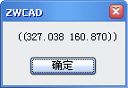

(vlr-mouse-reactor data callbacks)
Constructs an editor reactor object that notifies of a mouse event.
This function returns an editor reactor object.
The function accepts two arguments:
| Argument | Meaning |
|---|---|
| data | Any AutoLisp data, if there is no data, it can be nil. |
| callbacks |
A list of pairs of the following form: (event-name . callback_function) event-name is one of the symbols listed below: callback_function is a symbol representing a function to be called when the event fires. Each callback function accepts two arguments: |
Examples
| Code | Result |
|---|---|
|
(vl-load-com) (vlr-mouse-reactor nil '((:vlr-beginDoubleClick . beginDoubleClick))) ;;;define the callback function (defun beginDoubleClick(reactor_object point) (alert (vl-princ-to-string point)) ) |
When you double-click the left key of the mouse in the drawing, ZWCAD will open a dialog as following automatically:  |